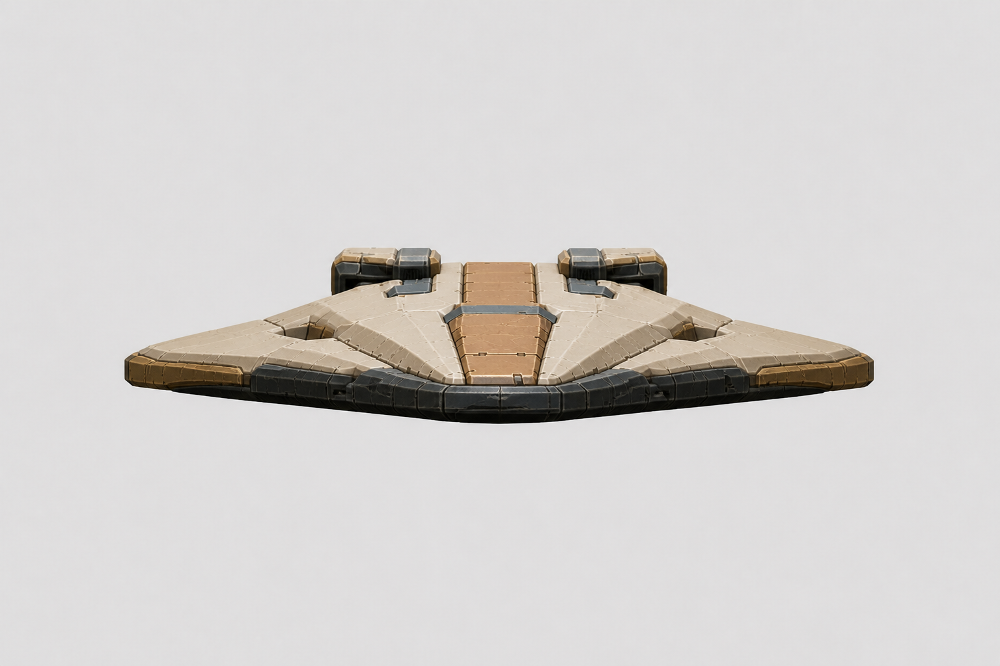
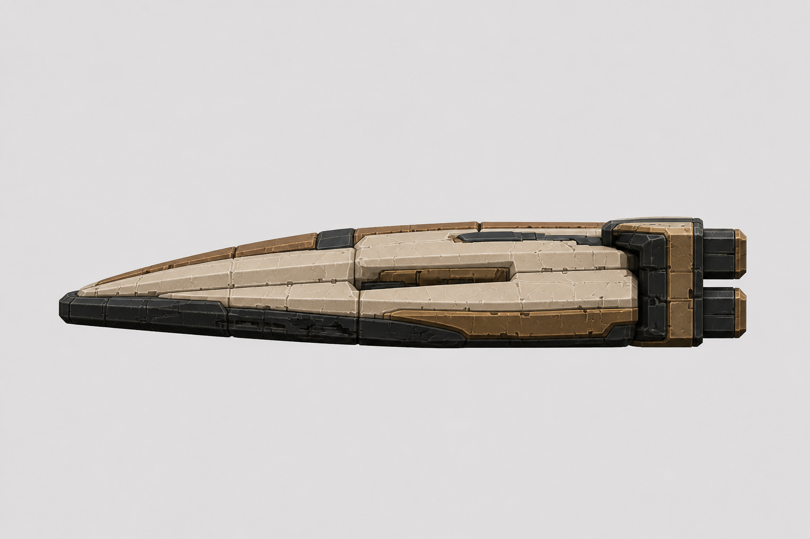
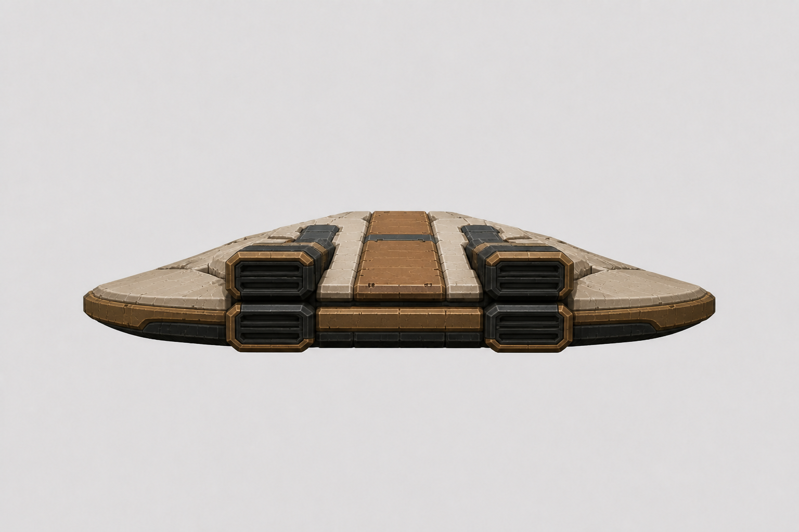
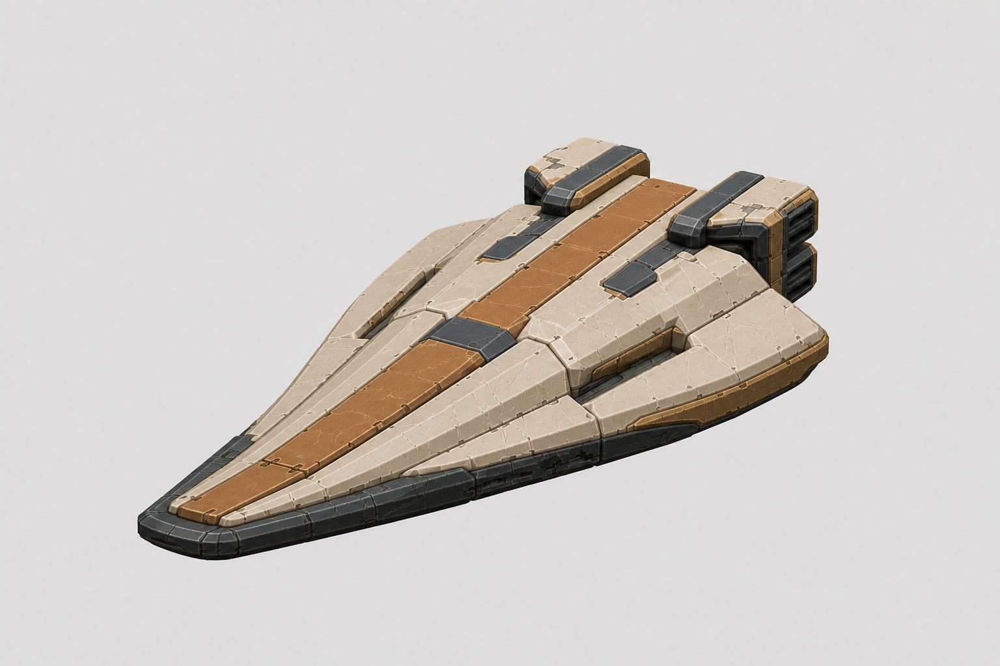
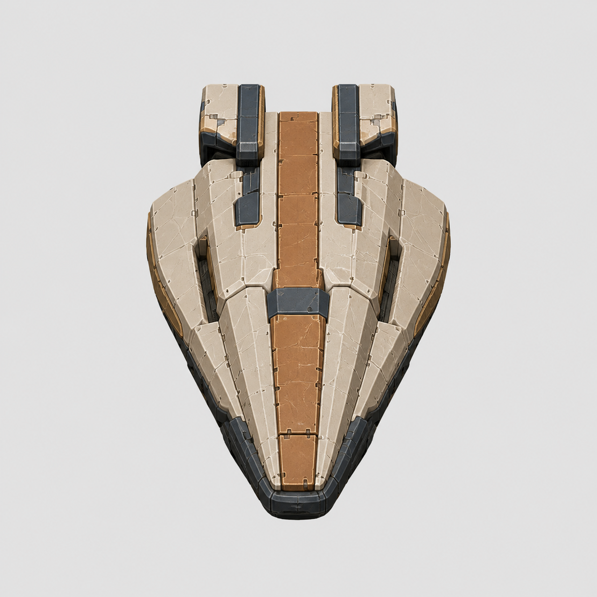
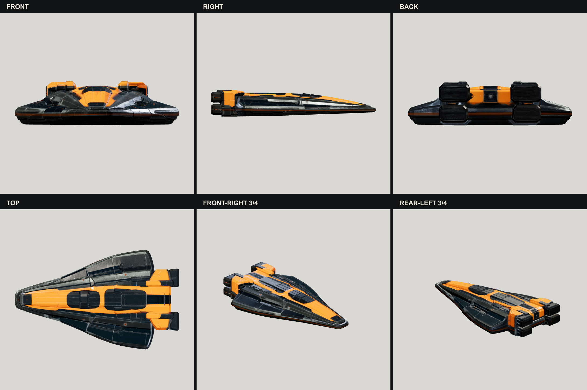

Kestrel · Meshy 7 input gate
Four separate, camera-consistent views of the approved v7 identity. Review them as one physical object; the first image is Meshy's primary front view.
Kestrel pilot succeeded · 30 credits spent · balance 190 · no fleet batch started




Construction evidence only
This inferred top view is deliberately excluded from the API input set.

Raw Meshy 7 result
Geometry is promising, but the dark navy/vivid orange material result fails the approved warm-bone/muted-ochre identity.
